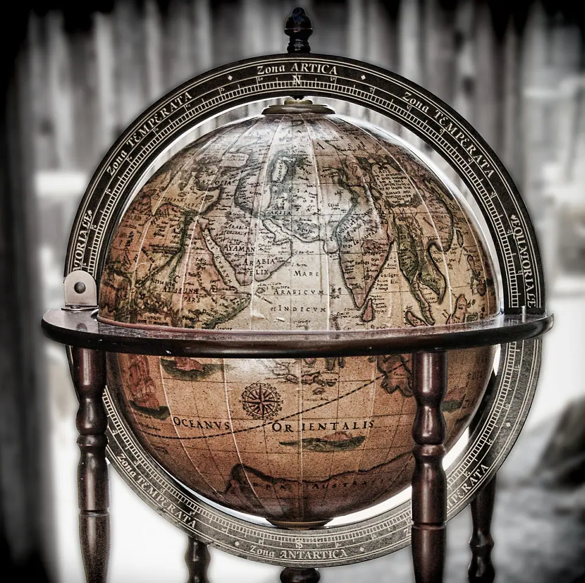

World History
Four turning points that shaped the wider world — the printing press, the Silk Road, the Renaissance, and the Magna Carta — and still shape the lives we lead today.

The printing press
Few inventions have changed the world as completely as the printing press. Before it, every book had to be copied by hand, a labor so slow and costly that books were rare treasures and reading was the privilege of a tiny few. In the middle of the fifteenth century, a German craftsman named Johannes Gutenberg brought together movable metal type, oil-based ink, and a press adapted from the winemaker's, and the age of printed books began.
The effects were revolutionary and swift. Books could now be produced in quantity and at a fraction of the old cost, and within decades printing presses had spread across Europe, pouring out works on every subject. Literacy spread, ideas traveled as never before, and knowledge once locked in a few monasteries flowed out into the world. The printing press helped fuel the Renaissance, the Reformation, and the scientific revolution, each of which depended on the rapid, wide sharing of ideas.
It is no exaggeration to say that the modern world was printed into being. The press made possible the newspaper, the pamphlet, the cheap book, and eventually the universal literacy we now take for granted. Every reader today is an heir to Gutenberg's workshop, and every library is a monument to his quiet revolution in the sharing of human thought.
The Silk Road
Long before ships and airplanes knit the world together, a web of overland trade routes stretched for thousands of miles across Asia, linking the civilizations of China, India, Persia, Arabia, and Europe. We call it the Silk Road, after the precious Chinese silk that traveled west along it, though in truth countless goods moved in both directions — spices, gold, glass, paper, and much else besides.
But the Silk Road carried far more than merchandise. Along its caravan routes traveled ideas, religions, inventions, and art, mingling the cultures at either end in ways that shaped them all. Technologies such as papermaking spread westward; faiths spread in every direction; and the great cities along the route grew rich and cosmopolitan as crossroads of the known world. It was, in a sense, the first great engine of globalization, centuries before the word existed.
The Silk Road also had its darker cargo, for it carried disease as well as silk, and the great plagues of history traveled its routes alongside the merchants. Yet its lasting legacy is one of connection — a reminder that for as long as there have been peoples, they have traded, traveled, and learned from one another across great distances. The modern interconnected world has deep and ancient roots.
The Renaissance
Beginning in Italy in the fourteenth century and spreading across Europe over the following two hundred years, the Renaissance — a French word meaning "rebirth" — was a flowering of art, learning, and human confidence that marked the passage from the medieval world to the modern. It drew inspiration from the rediscovered knowledge of ancient Greece and Rome, and it placed a new emphasis on human achievement, observation, and the beauty of the natural world.
In art, the Renaissance produced masters whose works still astonish, who studied anatomy and perspective to render the human form and the visible world with unprecedented realism and feeling. In learning, scholars revived classical texts and pursued knowledge across every field, laying foundations for modern science. In exploration, the era's restless curiosity helped drive voyages that would connect the continents. It was an age that believed, as perhaps no age had before, in the capacity of human beings to understand and improve their world.
The Renaissance was not a sudden break but a gradual awakening, and it did not touch all people equally in its own time. Yet its influence on the centuries that followed was profound. The value it placed on inquiry, art, and the dignity of the individual flowed into the modern age and shapes how we think even now. To study the Renaissance is to watch the modern mind being born.
The Magna Carta
In the year 1215, on a meadow called Runnymede beside the River Thames, a group of rebellious English barons forced their king, John, to set his seal to a remarkable document. Known as the Magna Carta, or "Great Charter," it was at first a practical peace treaty addressing the grievances of the nobility. But within it lay a principle that would echo down the centuries: that even the king was not above the law.
Most of the Magna Carta's specific clauses concerned the feudal disputes of its day, and the original agreement broke down almost at once. Yet certain of its ideas proved immortal — above all, the notion that a ruler's power has limits, and that free people are entitled to lawful judgment rather than arbitrary royal will. Reissued and reinterpreted over the centuries, the charter became a foundation stone of the rule of law and of constitutional government.
Its influence reached far beyond England. The framers of later constitutions, including that of the United States, drew on the Magna Carta's principle that government must operate under law and respect the rights of the governed. Few documents of such age still speak so directly to the present. When we insist that no one is above the law, we are, in a sense, still standing on that meadow at Runnymede.
The Industrial Revolution
Beginning in Britain in the late eighteenth century and spreading across the world over the following century, the Industrial Revolution transformed human life more profoundly than almost any change since the invention of farming. New machines, powered first by water and then by steam, moved manufacturing out of the home and the small workshop and into the factory, multiplying what human hands could produce many times over.
The effects reached into every corner of existence. Goods that had been scarce and costly became plentiful and cheap. Great cities swelled as people left the countryside for factory work, and whole new ways of living — and new hardships — came with them. The steam engine powered not only factories but railways and ships, shrinking the world and quickening the pace of trade and travel. The modern economy, with all its abundance and all its dislocations, was forged in these decades.
Like every great transformation, it brought shadows alongside its light. Early factory conditions were often grim, with long hours, dangerous machinery, and child labor, and the struggle to reform them shaped the politics of the age. Yet the Industrial Revolution also lifted, over time, the material condition of ordinary people to heights their ancestors could not have imagined. To understand the modern world — its wealth, its cities, its very rhythms — is to understand this revolution of iron, steam, and labor.
The age of exploration
Beginning in the fifteenth century, European sailors set out in small wooden ships to cross oceans no one from their lands had crossed before, in an age of exploration that would connect the continents and remake the map of the world. Driven by the search for trade routes, wealth, and knowledge — and no small measure of ambition — these voyages linked peoples who had been strangers and set in motion exchanges of plants, animals, goods, and ideas on a scale never seen before.
The consequences were vast and profoundly mixed. New crops crossed the oceans in both directions, transforming diets and populations around the globe; the potato and the tomato, now staples of European and American tables, came from the Americas. But the same age brought conquest, the devastation of native peoples by war and disease, and the cruelty of the slave trade. An honest account holds the wonder and the horror together, for both are the true legacy of those small ships on the wide sea.
The age of exploration ended the long separation of the world's peoples and began the interconnected age we still live in. It reminds us that history's greatest turning points are rarely simple triumphs; they are human stories, full of courage and greed, discovery and suffering, all at once. To study them honestly is to grow wiser about our own complicated age.
The long view
History on the grand scale can seem remote, a procession of distant centuries and far-off places. But these four turning points — the press, the road, the rebirth, and the charter — remind us how directly the deep past still shapes our daily lives. We read because of Gutenberg, we live in a connected world foreshadowed by the Silk Road, we think in ways the Renaissance made possible, and we are governed under laws whose roots reach back to Runnymede.
To take the long view is to see ourselves as part of a vast, continuing human story, heirs to countless generations who built, discovered, and dreamed before us. That perspective is one of the quiet gifts of reading history — it humbles and encourages us at once, reminding us that our own troubles are not new under the sun, and that human beings have met far greater ones with courage and ingenuity. When you have wandered the wider world, the Biographies bring you close to the individual men and women who helped make it.